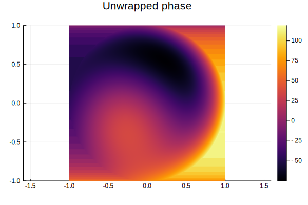
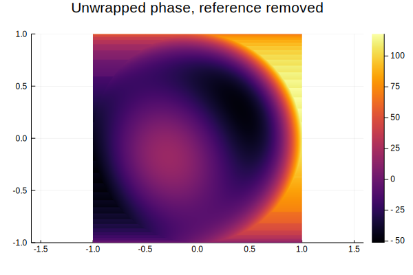
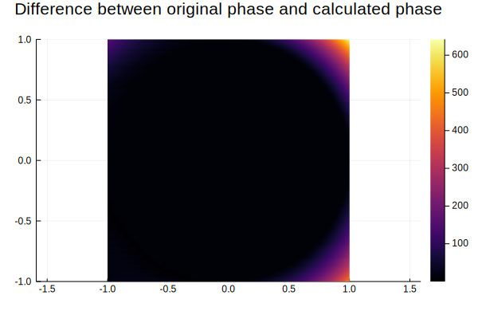
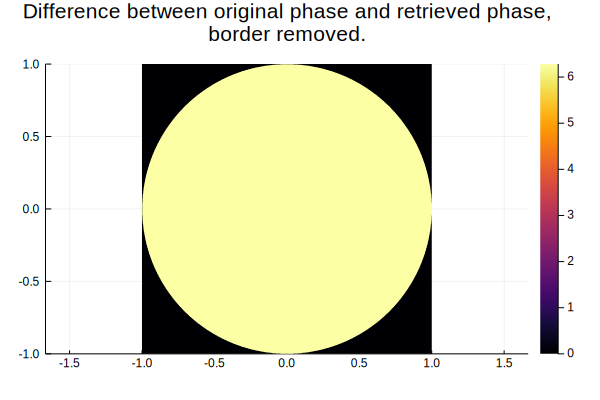
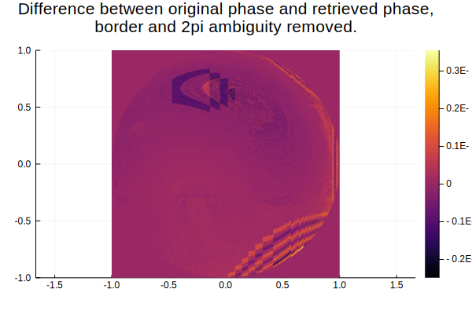
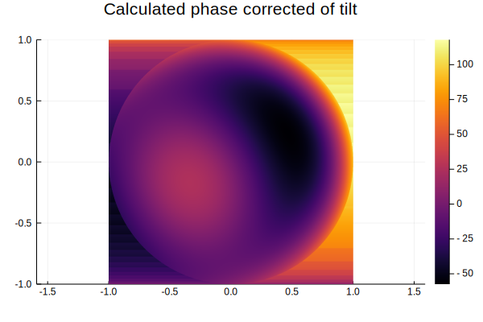
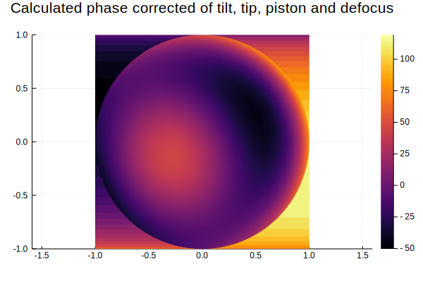

Example of using Wavefronts.jl
using Plots
using Wavefronts┌ Info: Recompiling stale cache file /home/klafyvel/.julia/compiled/v1.2/Wavefronts/NyKHD.ji for Wavefronts [5a5f1f2e-54ce-422a-b05d-abd9e7c2d134]
└ @ Base loading.jl:1240Making interference patterns
Let's model a phase stepping interferometer. We need four patterns with a reference shifted by π/2 every time.
x = -1:0.001:1
y = -1:0.001:1
X = repeat(reshape(x, 1, :), length(y), 1)
Y = repeat(y, 1, length(x))
evaluate_intensity(f) = map(f, X, Y)
a = Wavefront(
Tilt(10)+Coma(10,20)+Spherical(10)+Defocus(10),
circ
)
patterns = [
map(intensity(a, Wavefront(Tip(30)+Piston(i*π/2), circ)), X, Y)
for i in 0:3
];The patterns are like this
heatmap(x,y,patterns[1],aspect_ratio=1,title="Interference patterns")
Retrieving the phase step by step
Let's retrieve the raw phase
raw = rawphase(patterns...)
heatmap(x,y,raw, aspect_ratio=1, title="Raw phase")
unwrapped = unwrapphase(raw)
heatmap(x,y,unwrapped, aspect_ratio=1, title="Unwrapped phase")
The reference was tilted, let's remove it by hand (there is also a function which does it for you).
ref_ϕ = phase(Wavefront(Tip(30)))#1 (generic function with 1 method)ref_ϕ_values = ref_ϕ.(X,Y)
calc_phase = unwrapped + ref_ϕ_values
heatmap(x,y,calc_phase, aspect_ratio=1, title="Unwrapped phase, reference removed")
original_values = phase(a).(X,Y)
diff = abs.(original_values - calc_phase)
heatmap(x,y,diff, aspect_ratio=1, title="Difference between original phase and calculated phase")
It is expected that the border presents weird behaviour. We can ignore that.
diff .*= circ.(X,Y)
heatmap(x,y,diff, aspect_ratio=1, title="Difference between original phase and retrieved phase, \nborder removed.")
We can calculate the RMS of the difference
rms = sqrt(sum(diff.^2) / sum(circ.(X,Y)))6.2831853071795845weird, it looks like the phase shift is constant
2π - rms1.7763568394002505e-15Yeah, so obviously it's only an ambiguity over 2π, which makes sens. We can re-evaluate the RMS knowing that
diff = circ.(X,Y) .* (diff.-2π)
rms = sqrt(sum(diff.^2) / sum(circ.(X,Y)))4.1568208770299665e-15Better :D
heatmap(x,y,diff, aspect_ratio=1, title="Difference between original phase and retrieved phase, \nborder and 2pi ambiguity removed.")
Okay, let's try to find the aberrations in this.
project(Tilt, calc_phase, mask=circ)Tilt(9.998483428521132)Coool :D, as a reminder, the original aberration was
Tilt(10)+Coma(10,20)+Spherical(10)+Defocus(10)Wavefronts.AddAberration(Wavefronts.AddAberration(Wavefronts.AddAberration(Tilt(10), Coma(Wavefronts.HorizontalComa(10), Wavefronts.VerticalComa(20))), Spherical(10)), Defocus(10))Let's find other aberrations !
project(Tip, calc_phase, mask=circ)Tip(-0.0006443144242641213)project(Coma, calc_phase, mask=circ)Coma(Wavefronts.HorizontalComa(9.999317746440996), Wavefronts.VerticalComa(19.997991178457728))project(Piston, calc_phase, mask=circ)Piston(-6.284089170735127)Oh, here is our $2\pi$ error again !
project(Defocus, calc_phase, mask=circ)Defocus(9.9989115973913)project(Astigmatism, calc_phase, mask=circ)Astigmatism(Wavefronts.ObliqueAstigmatism(-8.893678329211982e-16), Wavefronts.VerticalAstigmatism(-5.929118886141322e-16))project(Trefoil, calc_phase, mask=circ)Trefoil(Wavefronts.ObliqueTrefoil(-0.001149438351092385), Wavefronts.VerticalTrefoil(0.0031118694231453787))project(Spherical, calc_phase, mask=circ)Spherical(9.998530646137448)We can even correct some aberrations !
corrected = correct(Tilt, calc_phase,mask=circ)
heatmap(x,y,corrected, aspect_ratio=1, title="Calculated phase corrected of tilt")
Automated method
Of course, in real life you don't want to do all these steps by yourself and it's perfectly fine because Wavefronts.jl does them for you. :)
calc_phase = retrievephase(patterns...; mask=circ, correct_aberrations=[Tilt, Tip, Piston, Defocus])
heatmap(x,y,calc_phase, aspect_ratio=1, title="Calculated phase corrected of tilt, tip, piston and defocus")
Our calculated phase still have the interesting aberrations (coma and spherical) while the others have been removed. As a reminder the original aberrations were Tilt(10)+Coma(10,20)+Spherical(10)+Defocus(10).
project(Tilt, calc_phase, mask=circ), project(Coma, calc_phase, mask=circ),
project(Spherical, calc_phase, mask=circ), project(Defocus, calc_phase, mask=circ)(Tilt(0.00022790806120813725), Coma(Wavefronts.HorizontalComa(9.999317748986906), Wavefronts.VerticalComa(19.998635395167106)), Spherical(9.99909178844765), Defocus(0.0004552520838158169))